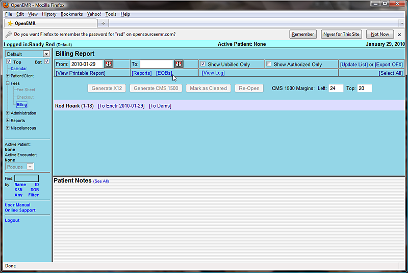
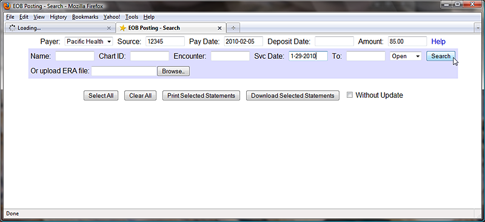
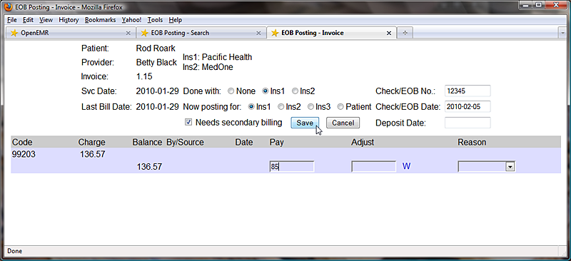
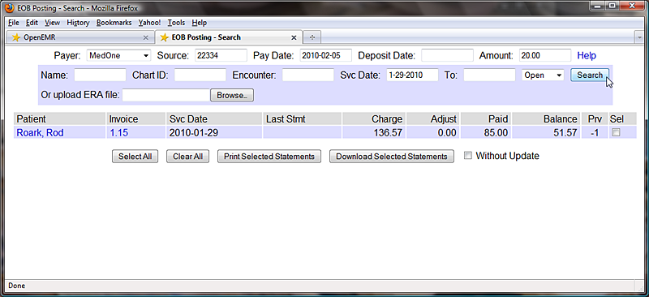
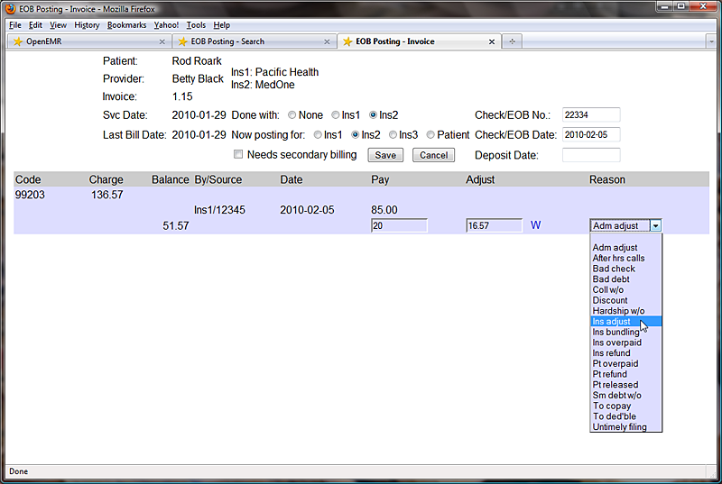
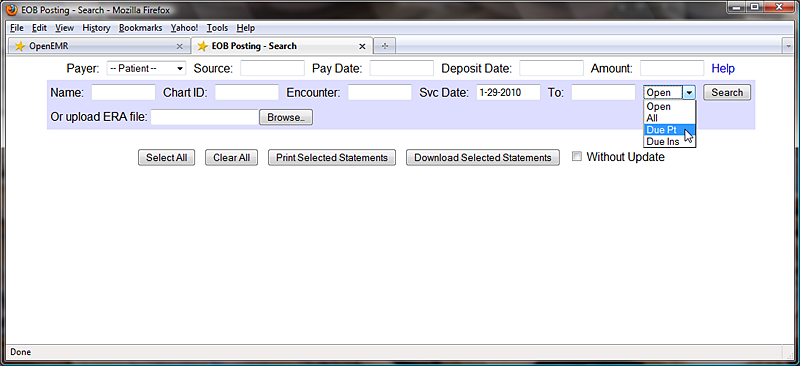
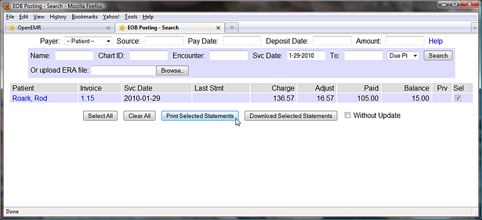
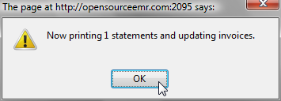
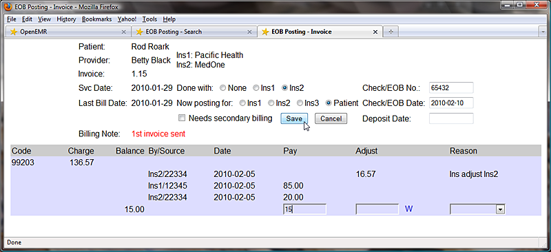

Users classified as Accounting or Administrator are also authorized to enter receivables for the clinic. Checks received from insurance companies can be entered here and distributed to cover the appropriate encounters. Patients can also be billed, and their payments recorded.
To begin, select 'Fees - Billing' from the navigation menu and click 'EOBs' to bring up the Explanation of Benefits Search window. This is where you can upload an ERA file (click 'Help' in the upper right-hand corner for more information) or begin inputting payments manually.
At the top you may enter a source ( Eg. check number ), pay date and check amount. The amount field will be automatically decremented as payments are entered into the associated invoices. When all invoices have been completed this value should be zero.
The search fields, with the blue background, are for locating a specific invoice (or invoices). Enter the appropriate parameters, such as the date of service, and click 'Search' to bring up a list of all invoices (claims) matching the requested parameters.

The list shows the patient and invoice number, as well as the current balance to be paid. The number with a '-' in the 'Prv' column indicates the number of insurance companies for which this invoice is awaiting payment.
Clicking the invoice number you wish to work with opens the EOB Invoice window. Notice that the source and pay date from the previous window have been copied over; this saves time in the common case where a single check from the insurance company pays for multiple claims.
The EOB Invoice page contains a detailed list of payments made on this invoice so far. Enter the payment amount next to the remaining balance, and check 'Needs secondary billing'. This will allow the claim to be re-billed to the secondary insurance. Select 'Done with Ins1' above to indicate that the primary insurance EOB has been posted. When you are finished, click 'Save'.
Once payment has been billed and received from secondary insurance, it can be entered in the same way. Enter the source and pay date, etc. and locate the appropriate invoice(s) using the search function.
Payment amounts are now shown along with the remaining balance. The number in the 'Prv' column has also decreased. Select the invoice number to bring up the EOB Invoice window again.
Enter the payment amount and select 'Ins2' to indicate that the secondary insurance EOB has been posted.
Invoice adjustments may also be made here. Enter the adjustment amount (or click 'W' to waive the entire remaining balance), and select a reason for the adjustment from the drop-down list provided. Click 'Save' when finished.
Once payments from the insurance companies have been received and entered, you can use OpenEMR's EOB page to generate invoices for billing patients the remaining amounts.
Select 'Due Pt' from the drop-down list and click 'Search' to display a list of all invoices that are awaiting payment from patients. Invoices still awaiting payments from insurance companies will not be shown.
Check the box next to the desired invoice and click 'Print Selected Statements' to generate an invoice for that patient using a customizable template. Depending on your clinic's OpenEMR configuration, the invoice may be printed automatically.
A '1' in the 'Prv' column now indicates that the patient has been billed once for this claim. This number will increment every time a new invoice is printed for this encounter. This is useful when printing so that second and later notices may be worded differently from the initial statement.
You can also click on the patient's name in the invoice list to create a billing note for that patient. Enter your note into the text field and click 'Save'.

Once payment has been received, it can be entered into the invoice in the same manner as the insurance payments. In the 'Now posting for' list be sure to select 'Patient'. Enter the payment amount as before and click 'Save'.
